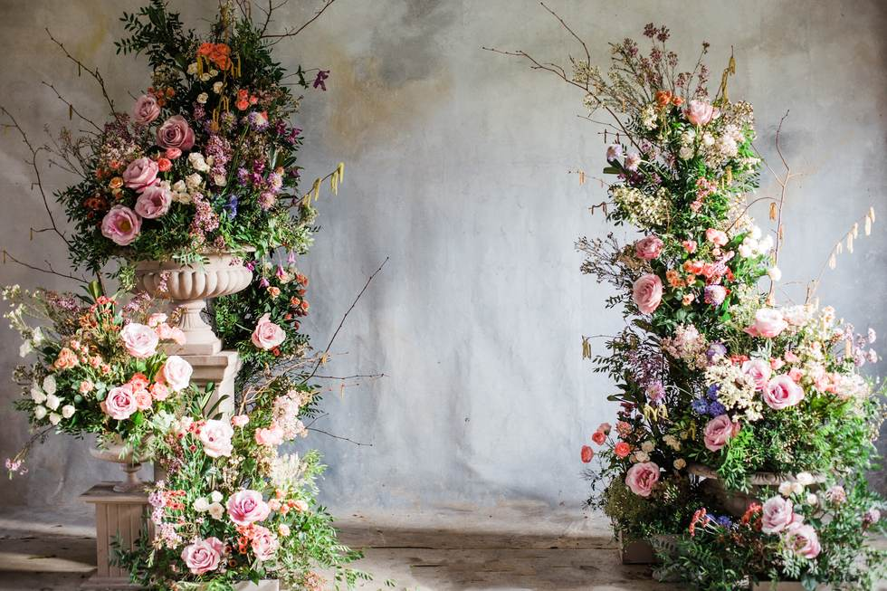
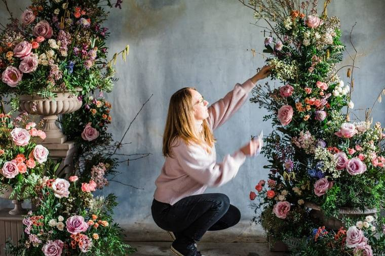
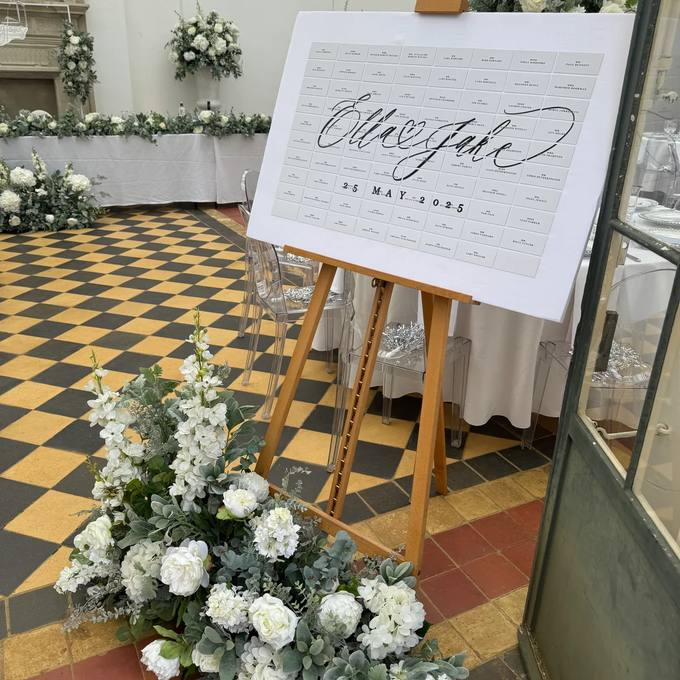
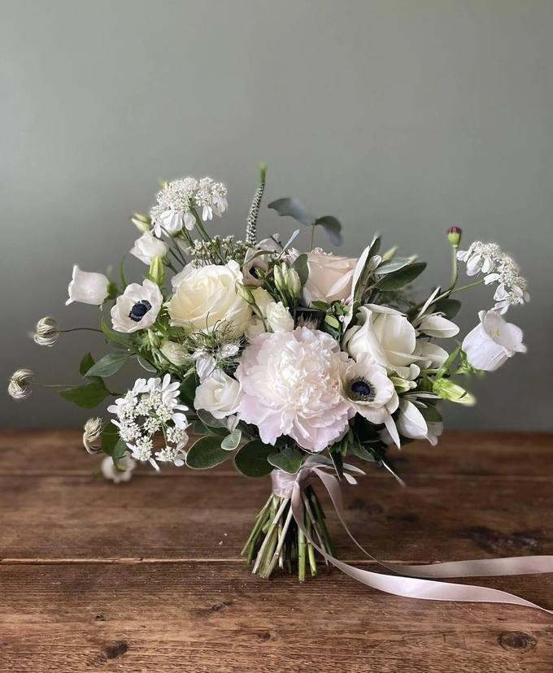
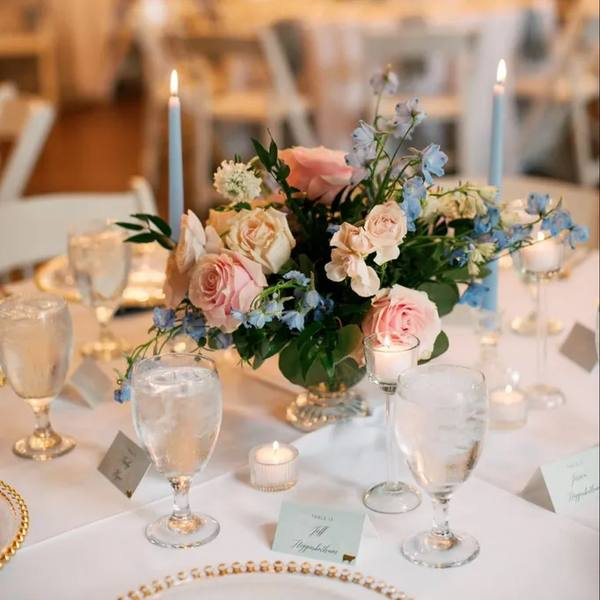

The third pass. The new palette — sage, grape, wisteria and dusty rose — with the white mark sitting directly on photography for the first time.
Exploration 02's structure stays — the editorial rules, the square corners, the full-bleed photography. What's gone is the fussiness: the tiny folio numbers, the figure labels, the dense letterspaced captions. The page furniture now does its job and gets out of the way.
Body text is bigger, a touch heavier, and set with more air. Everything meant to be read runs in a single comfortable column. If a paragraph needs effort, it's been rewritten.
The colour world opens right up. Green stops being the whole story: the new palette pairs sage with a deep vintage grape, a soft wisteria blue and a dusty rose. Grape takes over the working jobs — text, buttons, dark sections — because it's the only one of the four dark enough to hold white type. The other three do what flowers do: bring the colour.
And the white logo finally gets its moment, sitting straight on photography — which is almost certainly how the real website will open.
The four palette colours read like an arrangement — foliage, something deep, something blue, something blush. Grape is the stem that holds them together.
Feature panels, tags and tints. The foliage of the palette.
The working colour. Buttons, headings, dark sections, photo overlays.
Highlight panels, and the accent colour on grape surfaces.
The warm accent — link underlines, italic moments, small marks.
The background everything sits on.
Body text — grape, deepened until it reads as near-black.
Sage and wisteria washed right back, for quiet section panels.
Sage, wisteria and dusty rose are all mid-tones — lovely as surfaces, but none can hold white text at button size. Grape can, comfortably. So it carries every action and heading, and the three softer colours stay decorative, which is exactly the role that suits them.
Four soft colours together can drift towards nursery-wallpaper. The guard rails: never more than two of the mid-tones on screen at once, always anchored by grape or a photograph, and the tint versions doing most of the day-to-day work while the full-strength colours appear in deliberate blocks.

The white mark sits on photography only over calm areas, always with a grape scrim behind it — never across faces or busy blooms.
Fraunces and Jost carry over — they're the constant across all three explorations. The change is in the setting: bigger body sizes, longer line heights, plainer captions, and far fewer of the small tracked-out labels.
Folio numbers, figure labels, vertical scroll hints, and most of the wide-tracked micro-caps. Labels still exist — sections and cards need them — but tracking is tighter, sizes are up a point, and there are simply fewer of them per screen.
The single italic flourish per headline continues, now in dusty rose on light surfaces and wisteria on grape. Same discipline as ever: one phrase, never a whole line.
Same rules as before — natural light, real interiors, edge-to-edge or squared off. The captions just talk like a person now, without the numbering system.


Every photographic overlay is now grape rather than green or black — it flatters both the pinks and the foliage in the arrangements, and it's what lets the white logo sit on any image in the library without clashing.
Minimum width of about a quarter of the frame, clear space equal to the height of the flower cameo, and always over the calmest part of the image. If no calm area exists, the logo goes on a solid grape panel instead — never fighting the flowers for attention.
Seasonal schemes for restaurants, bars and hotels — swapped over quarterly, invoiced monthly, never watered once.
Delphinium, wisteria and cornflower stems that hold their colour long after the honeymoon.
Made months ahead, zero day-of stress, yours to keep long after the day.
ExploreUrns, columns and broken arches — built for the venue, set the day before.
Explore
Rotating schemes for restaurants, bars and hotels. One monthly fee, no wilting.
ExploreHand-built faux florals for weddings, restaurants and venues — designed to photograph like fresh, made to last forever.
Indicative only — the white mark, grape overlay and new palette pressure-tested in a real hero.
This is the most versatile of the three directions. Grape gives the brand a grown-up backbone the moss never quite had, the four colours map neatly onto real floral palettes, and the white mark over photography is genuinely strong — that cover treatment could ship as the website hero almost as-is.
The one caution: this palette has drifted a long way from the logo's crimson-on-pink. The white and any future ink-dark versions of the mark work beautifully here, but the original pink lockup would now feel like a visitor from another brand. Worth a deliberate decision with the designer — either the logo colourways evolve toward this palette, or dusty rose gets promoted enough to bridge back to it. Not a problem, but a choice that shouldn't be made by accident.